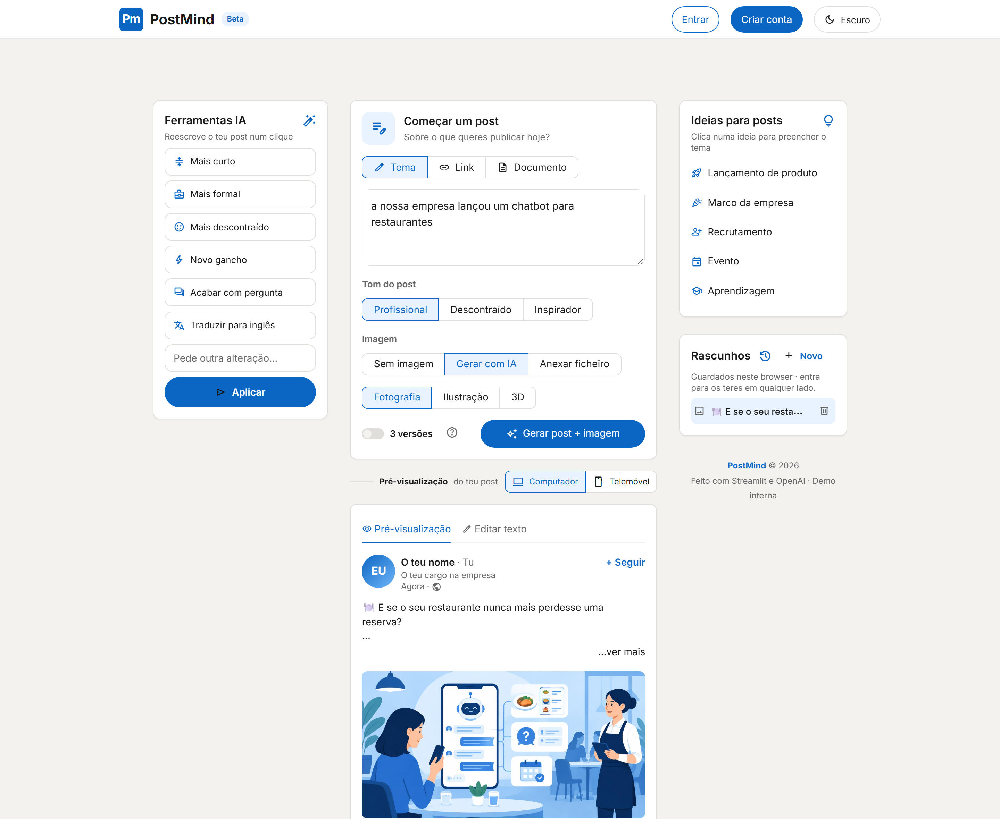
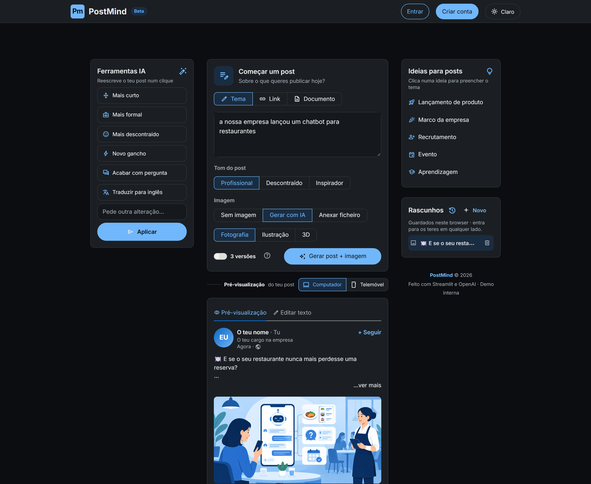
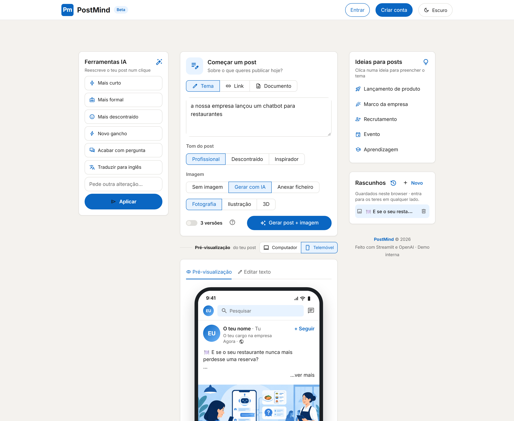

Escreve o tema, escolhe o tom e carrega em Gerar. O PostMind devolve o texto, as hashtags e uma imagem feita à medida — com pré-visualização igual ao LinkedIn.

Do tema ao post publicado, sem sair do browser.
Ou cola o link de uma notícia, ou carrega um PDF.
Profissional, descontraído ou inspirador — e o estilo da imagem.
Ajusta com um clique, copia e abre o LinkedIn com o texto pronto.
Pensado para quem quer publicar bem, sem perder tempo.
Escreve sobre uma ideia, resume um artigo ou transforma um PDF num post.
História, direto ou em lista — escritas em paralelo; escolhes a melhor.
Fotografia, ilustração ou 3D no formato do LinkedIn. Ou anexa a tua imagem ou vídeo.
Mais curto, mais formal, novo gancho, acabar com pergunta, traduzir para inglês — e desfazer.
«Mais azul», «minimalista» ou «põe o fundo em Lisboa». A IA ajusta a imagem.
Computador e telemóvel, com aviso de onde cai o «…ver mais».
Copia o texto ou abre o LinkedIn com o post já preenchido.
Cada post fica guardado sozinho — no browser ou na tua conta.
Google, LinkedIn ou email e palavra-passe. Ou usa sem conta.
Design inspirado no LinkedIn, todo em português de Portugal.


Pensado para proteger as contas e os dados.
Nenhuma chave publicada. As chaves de acesso não fazem parte do projeto publicado.
Palavras-passe cifradas com scrypt e salt aleatório.
Login com Google e LinkedIn por OpenID Connect.
Rascunhos privados: cada pessoa só vê os seus.
Um projeto simples, só em Python.
O PostMind é um projeto interno. A app não está disponível para uso público — é apresentada ao vivo pela equipa.
codeVer o código